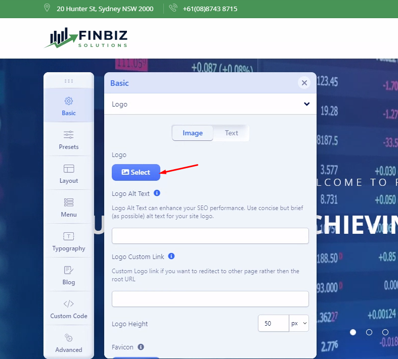

Introduction
Thank you very much for choosing our Joomla Template. We truly appreciate and really hope that you'll enjoy our template!
FinBiz - the ultimate Joomla template designed to help businesses with their finance consulting needs. With its powerful features and intuitive interface, FinBiz makes it easy for businesses of all sizes to create a professional-looking website that showcases their expertise and services.
One of the standout features of FinBiz is its super-fast site building capabilities. With just a few clicks, you can have a fully-functional website up and running in no time. Whether you're a seasoned web developer or a complete novice, FinBiz's intuitive drag-and-drop interface makes it easy to create a website that looks great and functions seamlessly.
FinBiz is also fully responsive and mobile-friendly, ensuring that your website looks great on any device. With device-wise responsiveness controls, you can tailor your website to different devices, making sure that it looks just as good on a mobile phone as it does on a desktop computer.
Perhaps one of the most appealing features of FinBiz is its real-time frontend site building capabilities. With this feature, you can make changes to your website on the fly, without ever having to leave the page. This makes it easy to experiment with different designs and layouts until you find the perfect look for your business.
What's more, FinBiz allows you to create a website without coding. This means that you don't need to have any programming knowledge to create a beautiful, functional website that showcases your business's unique offerings. With its built-in pages for quicker site launch, you can have a fully-functional website up and running in no time
FinBiz is also regularly updated, ensuring that it always stays current with the latest web design trends and best practices. And with dedicated support, you can rest assured that any issues or questions you have will be promptly addressed
If you're new to web design or need some guidance getting started, FinBiz also includes detailed documentation to help you get started quickly. With its easy-to-follow instructions and helpful tips, you can have your website up and running in no time.
And perhaps the best part of all - FinBiz includes SP PageBuilder Pro, a powerful drag-and-drop page builder that normally costs $49. With SP PageBuilder Pro, you can create custom pages with ease, adding unique design elements and custom functionality to your website.
Highlighted features
- Super Fast Site Building
- Fully responsive and mobile-friendly ready
- Kickstart Package Joomla 4.3
- SP Page Builder Pro
- Helix Ultimate Framework
- Built on Bootstrap 5
- Real-time Frontend Site Building
- Device-wise Responsiveness Controls
- Create a Website Without Coding
- 2 Contact Style Page with map included without using API
- Appointment Page included with easy formbuilder
- and much more Built-in pages for quicker site launch
- Regular Update & Dedicated Support
- Detailed documentation for a quick guided start
In conclusion, if you're looking for a powerful, intuitive Joomla template that can help you create a professional-looking website quickly and easily, look no further than FinBiz. With its advanced features, easy-to-use interface, and dedicated support, FinBiz is the perfect choice for businesses of all sizes looking to take their online presence to the next level.
Note: All images are just used for Preview Purpose Only. They are not part of the theme and NOT included in the final purchase files.
Install Template Only
If you already have a website, this is the option for you, it will only change the interface website without losing any content of your website.
Step 1 - Download your Finbiz template from TemplateMonster
Step 2 - Log in to your Joomla Dashboard.
Step 3 - Go to Extensions → Manager → Install
Step 4 - Choose this file: template_only.zip from your computer then click Install
Step 5 - Go to System → Site Template Style → then set Finbiz is default
Step 6 - Click to SimpleX template → Template Manager button → Advanced tab → Import & Export then import setting file from download package
Import Template Setting
Please, follow the steps below to Import Template Setting:
Step 1 - Log in to your Joomla Dashboard.
Step 2 - In left sidebar menu, please go System → Site Template styles
Step 3 - Click to Finbiz template → Template Option button
Step 4 - Go to Advanced option → Import → Export
Step 5 - Now, click Import Setting button and choose setting file from download package.
Step 6 - Click SAVE and enjoin the results.

Import Demo Pages
In SP Page Builder Pro once you create a custom design (Page, Row, and addon), you can save it for later use as many times you want.
We've pre-made the page and packaged it, you'll find it in the download package from TemplateMonster.
Creating your page will become simpler by importing existing pages, then editing as you like.
Please, follow the steps below to Import Demo Pages:
Step 1 - Log in to your Joomla Dashboard.
Step 2 - In left sidebar menu, please go Components → SP PageBuilder Pro → Pages
Step 3 - Click NEW button to create a new page
Step 4 - Click IMPORT button and choose file from your download package
Step 5 - Click SAVE button to finish
Install Kickstart Package
A Kickstart pack is actually a complete demo website and an entire Joomla package containing the CMS, components, modules, template, other necessary data, and configurations. In case of Kickstart, you don’t have to manually create or suit modules, component data or configure the CMS. Kickstarts also can be used to restore or recreate the demo site appearance. Kickstart packs contain demo layouts, demo contents and placeholder images. You can retain the demo layouts, but the demo texts and any demo images are not licensed for using on live sites.
You may get the readymade demo layouts by installing Kickstart packs. It's up to you whether you'll install a Kickstart pack on your local host or on a live server. Just keep in mind that, you are not allowed to use demo images or demo texts on live sites. So replace the demo texts and images with your own contents.
Home Page

Contact Style 1 Page
Contact Style 2 Page
Appointment Page
Upload your logo
You can upload your logo image in the Template Options. If the logo is not uploaded, then your site name will be used.
Please, follow the steps below to upload your logo:
Step 1 - Login to your Joomla Dashboard.
Step 2 - Go to System → Site Templates → Styles → Finbiz
Step 3 - Click Template Options button
Step 4 - In the Basic option you can see the Logo field, just click SELECT and choose your Logo now
Step 5 - Finaly, just click SAVE when finish.

For a header with an image set as a background, we recommend using a logo image with transparent background - PNG, SVG, or WEBP file type. For a header with a dark background color set - use a logo with contrasting colors, more light, even white color letters, and graphic elements. To get a good-looking logo you can hire a professional designer or use one of many available online logo creators (also free).
Favicon
Favicon - is a small icon that displays next to the site title in the browser. It serves as a recognition element that builds trust among viewers because it helps them visually identify the website. In most cases use .png or .gif format with 32 x 32 px size, browsers resize to 16x16 px.
Step 1 - Login to your Joomla Dashboard.
Step 2 - Go to System → Site Templates → Styles → Finbiz
Step 3 - Click Template Options button
Step 4 - In the Basic option you can see the Favicon field, just click SELECT and choose your Favicon now
Step 5 - Finaly, just click SAVE when finish.
Preloader
In the Body section, you can turn the website Preloader on or off. If you turn on the preloader chosen animation will be shown while loading your site. It can be also a website logo image if you would select the last option.
Step 1 - Login to your Joomla Dashboard.
Step 2 - Go to System → Site Templates → Styles → Finbiz
Step 3 - Click Template Options button
Step 4 - In the Basic option you can see the Body field
Step 5 - Enable Preloader then Select a preloader animation.
Step 6 - Finaly, just click SAVE when finish.
Copyright
If you want to show a copyright notice on your website footer, turn on this option. Select the appropriate module position for the copyright notice (e.g. footer1, footer2). If you want to show some features along with the copyright notice module, choose the ordering using the Feature Position menu. Just below the Feature Position drop-down menu, you get a text box to put the footer copyright text.
Use {year} to get an auto-updated year.
Contact Infos
Contact info is information for customers to contact you such as email address, phone number, as well as working time. All of this information is easily changed via Template Option
Presets Setting
The Presets tab gives you the ability to quickly and easily configure color settings related to the appearance of the Helix-powered template. This includes being able to switch between pre-configured presets with customization options and a custom color set.
Layout Setting
Layout Manager allows you to build a flexible layout based on module positions. Layout Builder is one of the unique features of Helix Ultimate 2.0 which allows webmasters to customize the existing template in almost any shape without code customization.
Typography
Typography in websites is arguably more important than other design elements since type is the one thing that is consistently rendered across different browsers. Properly selected Fonts make it easy to bring personality to your project. We allow webmasters a choice, they can use Google Fonts or/and System fonts. Of course, anytime they can also upload and set their own custom font using custom CSS.
Fonts can be used for the whole website (Body), Headers (H1-H6), and Navigation (Main Menu). You can also assign the Fonts to specific CSS elements (Class / ID) only.
Blog
This area of settings allows you to enable some appearance elements (Image Sizes in px) as much a social comments, Author Info and social share buttons.
Custom CODE
There are plenty of options available to you for customizing your Helix-based template. If you can make your customizations via Template Options, custom files or by custom code modules/plugins, this is safer than editing the template code. In addition, you can apply google tracking codes, CSS code, JS codes, and HTML tags/codes. So, make sure you have some knowledge base on these codes before applying something
Get support
The easiest way to check available support options and contact an author is to open the description page (the Support tab) of the product you purchased and select the type of support which suits you best.
Social Setting
If you want to show a copyright notice on your website footer, turn on this option. Select the appropriate module position for the copyright notice (e.g. footer1, footer2). If you want to show some features along with the copyright notice module, choose the ordering using the Feature Position menu. Just below the Feature Position drop-down menu, you get a text box to put the footer copyright text.
Use {year} to get an auto-updated year.